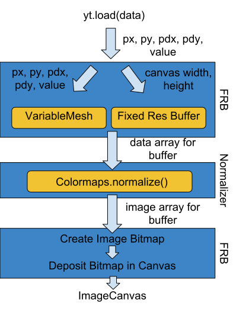
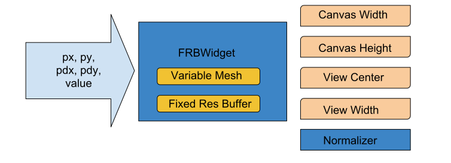
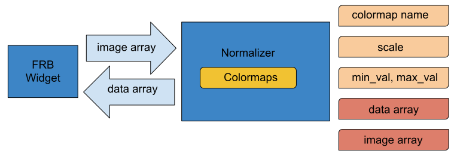

Leveraging Jupyter, Rust, and WebAssembly for Browser-Based Visual Data Exploration
Madicken Munk
Scipy (Austin, TX) 2018.07.13
About Me:


Visualizing our Data


Visualizing our Data Interactively
- Interactivity allows on-the fly parameter tuning
- ... it also allows for exploration
- Reveals interesting science!
- Allows science to be accessible
- to non-scientists
- to those that don't identify as "hackers"
- to those that are new to the data
Tools Enabling Interactivity Make Science Accessible
VisIT ParaView vtk
glue pyviz
ipyvolume Jupyter widgets
Using Jupyter Widgets out-of-the-box With yt
backup slideDiagram Image: Regular Widget
When might this become cumbersome?
Diagram Image: Python + js + Rust
Using yt-canvas-widget
backup slideUse case example


Pushing Data to the Browser Makes Sense as
↑ n
↑ data_{image}
↓ t_{client_compute}
Why Webassembly?
- faster than js
- wasm objects work with javascript
- sandboxed memory environment
- reduces t_{client_computer}
Why Rust?
- safe
- performant
- welcoming
wasm-bindgen
#[wasm_bindgen]
pub struct Foo {
internal: i32,
}
#[wasm_bindgen]
impl Foo {
pub fn new(val: i32) -> Foo {
Foo { internal: val }
}
pub fn get(&self) -> i32 {
self.internal
}
pub fn set(&mut self, val: i32) {
self.internal = val;
}
}
wasm-pack
 This can then be released as a npm package
This can then be released as a npm package
What does this mean?
With a single, fixed, up-front cost we eliminate n*t_render
This is useful in some, but not all cases
How it works: the first render
Widget Components: the FRB Viewer
Widget Components: the Normalizer
How it works: changing the colormap
How it works: navigating with canvas interactions
Demo: Large Dataset
backup slideLimitations of this Widget:
- requires a 2d data slice
- limited to data sizes
- limited functionality
- requires maintenance in multiple package ecosystems and languages
Moving Forward
- Broaden the functionality of the widget
- Linking with data units and values
- Allow for different dimensionalities
- Leverage traitlet linking for multiple field types
- Build out cross-functionality with yt
- Be inclusive
Links
- rust-yt-tools repository
- yt-canvas-widget repository
- Data and paper for widget demonstration
Installing the widget:
- doesn't require Rust
- doesn't requre you to compile to webassembly
pip install yt_pycanvas
jupyter nbextension enable --py --sys-prefix yt_pycanvas
Installing the widget (harder):
- does require Rust (nightly) / node / npm
- requires compilation to webassembly
git clone https://github.com/data-exp-lab/yt-canvas-widget
git clone https://github.com/data-exp-lab/rust-yt-tools
cd ./rust-yt-tools
wasm-pack init --scope data-exp-lab
cd ../yt-canvas-widget/js/
npm install --save ../../rust-yt-tools/pkg/
npm install
cd ../
pip install -e .
jupyter nbextension install --py --symlink --sys-prefix yt_pycanvas
jupyter nbextension enable --py --sys-prefix yt_pycanvas
- Matthew Turk
- Nathanael Claussen
- Nathan Goldbaum
- Kacper Kowalik
The end
Madicken Munk
https://munkm.github.io/2018-07-13-scipy

Leveraging Jupyter, Rust, and WebAssembly for Browser-Based visual Data Exploration by Madicken Munk is licensed under a Creative Commons Attribution 4.0 International License.
Based on a work at http://munkm.github.io/2018-07-13-scipy.